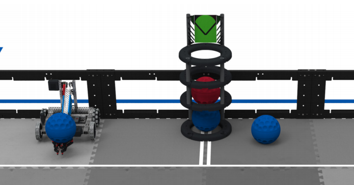
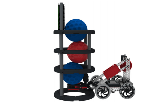
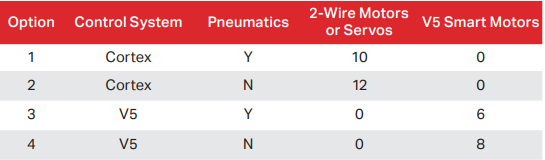
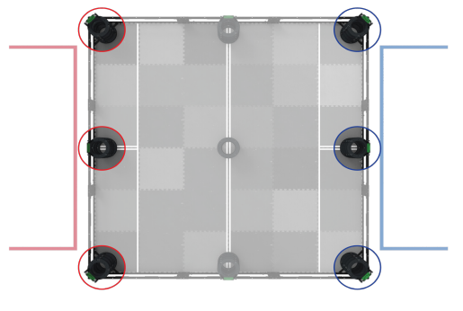
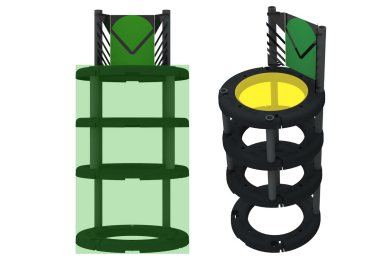
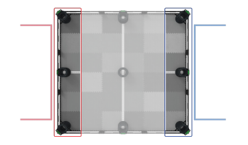
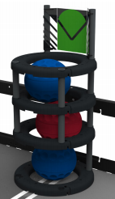
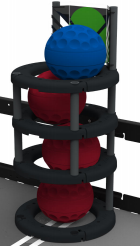
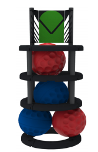
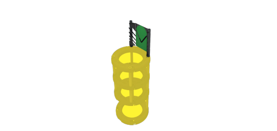

VEX Quick Reference | HD Projects
VEX Quick Refrence Rules
Rules
Safety Rules
If at any time the Robot operation or Team actions are deemed unsafe or have damaged any Field Elements or Game Objects, the offending Teams may be Disabled and/or Disqualified at the discretion of the Head Referee. The Robot will require re-inspection before it may take the field again.
If a Robot is completely out-of-bounds (outside the playing field), it will be Disabled for the remainder of the Match.
Note:
The intent is NOT to penalize Robots for having mechanisms that inadvertently cross the field perimeter during normal game play.
All Drive Team Members must wear safety glasses or glasses with side shields while in the Alliance Stations during Matches. While in the pit area, it is highly recommended that all Team members wear safety glasses.
Game Rules
All Teams are expected to conduct themselves in a respectful and professional manner while competing in VEX Robotics Competition events. If a Team or any of its members (Students or any Adults associated with the Team) are disrespectful or uncivil to event staff, volunteers, or fellow competitors, they may be Disqualified from a current or upcoming Match. Team conduct pertaining to <G1> may also impact a Team’s eligibility for judged awards. Repeated or extreme violations of <G1> could result in a Team being Disqualified from an entire event, depending on the severity of the situation.
Robotics competitions often induce intense, high stress situations. These are good opportunities to model and/or gain experience in handling these situations in a positive and productive manner. It is important that we all exhibit maturity and class when dealing with any difficult situations that may present themselves in both the VEX Robotics Competition and our lives in general.
This rule exists alongside the REC Foundation Code of Conduct. Violation of the Code of Conduct can be considered a violation of
Adults may assist Students in urgent situations, but Adults may never work on or program a Robots without Students on that Team being present and actively participating. Students must be prepared to demonstrate an active understanding of their Robot’s construction and programming to judges or event staff.
Some amount of Adult mentorship, teaching, and/or guidance is an expected and encouraged facet of VEX competitions. No one is born an expert in robotics! However, obstacles should always be viewed as teaching opportunities, not tasks for an Adult to solve without Students present and actively participating.
When a mechanism falls off, it is…
…okay for an Adult to help a Student investigate why it failed, so it can be improved.
…not okay for an Adult to put the Robot back together.
When a Team encounters a complex programming concept, it is…
…okay for an Adult to guide a Student through a flowchart to understand its logic.
…not okay for an Adult to write a pre-made command for that Student to copy/paste.
During Match play, it is…
…okay for an Adult to provide cheerful, positive encouragement as a spectator.
…not okay for an Adult to explicitly shout step-by-step commands from the audience.
At the beginning of a Match, each Robot must be smaller than a volume of 18” (457.2 mm) long by 18” (457.2 mm) wide by 18” (457.2 mm) tall. Using Field Element, such as the field perimeter wall, to maintain starting size is only acceptable if the Robot would still satisfy the constraints of <R5> and pass inspection without the Field Element. Robots in violation of this limit will be removed from the field prior to the start of the Match, at the Head Referee’s discretion.
Robots may not intentionally detach parts during the Match or leave mechanisms on the field.
Minor violations of this rule that do not affect the Match will result in a warning. Match Affecting offenses will result in a Disqualification. Teams that receive multiple warnings may also receive a Disqualification at the Head Referee’s discretion. Multiple intentional infractions may result in Disqualification for the entire competition.
Each Team must include Drivers, Programmer(s), Designer(s), and Builder(s). No Student may fulfill any of these roles for more than one VEX
Robotics Competition Team in a given competition season. Students may have more than one role on
the Team, e.g. the Designer can also be the Builder, the Programmer and a Driver.
a. Team members may move from one Team to another for non-strategic reasons outside of the
Team’s control.
i. Examples of permissible moves may include, but are not limited to, illness, changing schools,
conflicts within a Team, or combining / splitting Teams.
ii. Examples of strategic moves in violation of this rule may include, but are not limited to, one
Programmer “switching” Teams in order to write the same program for multiple Robots, or one
Student writing the Engineering Notebook for multiple Teams.
iii. If a Student leaves a Team to join another Team, <G6> still applies to the Students remaining
on the previous Team. For example, if a Programmer leaves a Team, then that Team’s Robot
must still represent the skill level of the Team without that Student. One way to accomplish this
would be to ensure that the Programmer teaches or trains a “replacement” Programmer in their
absence.
b. When a Team qualifies for a Championship event (e.g., States, Nationals, Worlds, etc) the Students
on the team attending the Championship event are expected to be the same Students on the Team
that was awarded the spot. Students can be added as support to the Team, but may not be added as
Drivers or Programmers for the team.
i. An exception is allowed if one (1) Driver and/or one (1) Programmer on the Team cannot attend
the event. The Team can make a single substitution of a Driver or Programmer for the
Championship event with another Student, even if that Student has competed on a different
Team. This Student will now be on this new Team and may not substitute back to the original
Team.
Violations of this rule will be evaluated on a case-by-case basis, in tandem with the REC Foundation
Student Centered Policy as noted in <G2>, and the REC Foundation Code of Conduct as noted in <G1>
Event Partners should bear in mind <G3>, and use common sense when enforcing this rule. It is not the
intent to punish a Team who may change Team members over the course of a season due to illness,
changing schools, conflicts within a Team, etc. Event Partners and referees are not expected to keep
a roster of any Students who has ever driven for a day. This rule is intended to block any instance of
loaning or sharing Team members for the sole purpose of gaining a competitive advantage.
During a Match, each Team may have up to three
(3) Drive Team Members in their Alliance Station and all Drive Team Members must remain in their
Alliance Station for the duration of the Match. Drive Team Members are not allowed to use any sort of
communication devices while in the Alliance Station. Devices with communication features turned off
(e.g. a phone in airplane mode) are allowed.
Note: Drive Team Members are the only Team members that are allowed to be in the Alliance Station
during a Match.
Note 2: During a Match, Robots may be operated only by the Drive Team Members and/or by software
running on the Robot’s control system, in accordance with <R28> and <G8>. Violations or refusal to
comply with this rule could be considered a violation of <G1> and is up to the discretion of the Head
Referee
Prior to the beginning of each Match, Drive Team Members must plug their VEXnet Joystick or V5 Controller into the VEXnet Field Controller’s Cat-5 cable via their controller’s competition port. This cable must remain plugged in for the duration of the Match, and may not be removed until the “all-clear” has been given for Drive Team Members to retrieve their Robots.
Minor violations of these rules that do not affect the Match will result in a warning. Match Affecting offenses will result in a Disqualification. Teams that receive multiple warnings may also receive a Disqualification at the Head Referee’s discretion.
Note: The intent of this rule is to ensure that Robots abide by commands sent by the tournament software. Temporarily removing the cable to assist with mid-Match troubleshooting, with an Event Partner or other event technical staff present and assisting, would not be considered a violation.
Drive Team Members may only touch the Team’s controls and Robot at specified times during a Match as per <G9a>. Drive Team Members are prohibited from making intentional contact with any Game Object, Field Element, or Robot during a Match, apart from the contact specified in <G9a>.
a. During the Driver Controlled Period, Drive Team Members may only touch their own Robot if the
Robot has not moved at all during the Match. Touching the Robot in this case is permitted only for
the following reasons:
i. Turning the Robot on or off.
ii. Plugging in a battery and/or power expander.
iii. Plugging in a VEXnet Key or V5 Robot Radio.
iv. Touching the V5 Robot Brain screen, such as to start a program.
b. Drive Team Members are not permitted to break the plane of the field perimeter at any time during the Match, apart from the actions described in <G9a>.
c. Transitive contact, such as contact with the field perimeter that causes the field perimeter to contact Balls inside of the field, would be considered a violation of this rule.
Minor violations of these rules that do not affect the Match will result in a warning. Match Affecting offenses will result in a Disqualification. Teams that receive multiple warnings may also receive a Disqualification at the Head Referee’s discretion.
Note: Any concerns regarding the Ball(s) starting positions should be raised with the Head Referee prior to the Match; Team members may never adjust the Balls or Field Elements themselves.
During the Autonomous Period, Drive Team Members are
not permitted to interact with the Robots in any way, directly or indirectly.
This could include, but is not limited to:
- Activating any controls on their VEXnet Joysticks or V5 Controllers.
- Unplugging or otherwise manually interfering with the field connection in any way
- Triggering sensors (including the Vision Sensor) in any way, even without touching them.
Minor violations of this rule will result in a Warning. Violations of this rule that affect the outcome of the Autonomous winner or disrupt the autonomous routine of their opponent will result in the Autonomous Bonus being awarded to the opposing Alliance. Teams that receive multiple warnings may also receive a Disqualification at the Head Referee’s discretion.
Any infractions committed during the Autonomous Period that are not Match Affecting, but do affect the outcome of the Autonomous Bonus, will result in the Autonomous Bonus being automatically awarded to the opposing Alliance.
a. Teams are responsible for the actions of their Robots at all times, including during the Autonomous Period. Any infractions committed during the Autonomous Period that are Match Affecting can result in a Disqualification, if warranted by the rule.
b. If both Alliances cause infractions during the Autonomous Period that would have affected the outcome of the Autonomous Bonus, then no Autonomous Bonus will be awarded.
But, be prepared to encounter defense. Strategies aimed solely at the destruction, damage, tipping over, or Entanglement of opposing Robots are not part of the ethos of the VEX Robotics Competition and are not allowed. If the tipping, Entanglement, or damage is ruled to be intentional or egregious, the offending Team may be Disqualification from that Match. Repeated offenses could result in Disqualification from the entirety of the competition.
a. VEX Robotics Competition Change Up is intended to be an offensive game. Teams that partake in solely defensive or destructive strategies will not have the protections implied by <G12> (see <G13>). However, defensive play which does not involve destructive or illegal strategies is still within the spirit of this rule
b. VEX Robotics Competition Change Up is an interactive game. Some incidental tipping, Entanglement, and damage may occur as a part of normal gameplay without violation. It will be up to the head referee’s discretion whether the interaction was incidental or intentional.
c. A Team is responsible for the actions of its Robot at all times, including the Autonomous Period. This applies both to Teams that are driving recklessly or potentially causing damage, and to Teams that drive around with a small wheel base. A Team should design its Robot such that it is not easily tipped over or damaged by minor contact.
Note: A Robot which has expanded horizontally in an effort to obstruct the field, or is legally covering the top of a Goal in a solely defensive manner, should expect vigorous interactions from opponent Robots. Damage that is caused by opponent Robots pushing, tipping, or Entangling with them would not be considered a violation of <G12>. Gratuitous damage or dangerous mechanisms may still be considered a violation of <R4>, <S1>, or <G1> at the Head Referee’s discretion.
Put simply: “wall-bots” and “cap-bots” are legal, but they are to be attempted at your own risk
In the case where referees are forced to make a judgment call regarding a destructive interaction between a defensive and offensive Robot, or an interaction which results in a questionable rules violation, the referees will err on the side of the offensive Robot.
Intentional strategies that cause an opponent to violate a rule are not permitted, and will not result in an infraction on the opposing Alliance. Minor violations of this rule that do not affect the Match will result in a warning. Match Affecting offenses will result in a Disqualification. Teams that receive multiple warnings may also receive a Disqualification at the Head Referee’s discretion.
<G3> should be used when enforcing this rule. In most cases, if a Robot causes their opponent to break a rule, the referee will simply not enforce the penalty on that opponent. Only in extreme cases, where the act of forcing the opponent into breaking a rule changes the outcome of the match for the benefit of the Robot, should that Robot who caused the opponent to break a rule receive a Disqualification.
A Robot may not Trap an opposing Robot for more than five seconds (0:05) during the Driver Controlled Period. A Trap is officially over once the Trapping Robot has moved away and the Robots are separated by at least two (2) feet (approximately one [1] foam tile). After ending a Trap, a Robot may not Trap the same Robot again for a duration of five seconds (0:05). If a Team does Trap the same Robot again, the count will resume from where it left off when the Trapping Robot initially backed off.
Minor violations of this rule that do not affect the Match will result in a warning. Match Affecting offenses will result in a Disqualification. Teams that receive multiple warnings may also receive a Disqualification at the Head Referee’s discretion.
Robots may not intentionally grasp, grapple or attach to any Field Elements. Strategies with mechanisms that react against multiple sides of a Field Element in an effort to latch or clamp onto said Field Element are prohibited. The intent of this rule is to prevent Teams from both unintentionally damaging the field and/or from anchoring themselves to the field.
Minor violations of this rule that do not affect the Match will result in a warning. Match Affecting offenses will result in a Disqualification. Teams that receive multiple warnings may also receive a Disqualification at the Head Referee’s discretion.
Robots must be designed to permit easy removal of Balls from any mechanism without requiring the Robot to have power after a Match.
Scores will be calculated for all Matches immediately after the Match once all Balls, Field Elements, and Robots on the field come to rest.
a. The determination of the Autonomous Bonus will occur for all Matches immediately after the Autonomous Period after all Balls, Field Elements, and Robots come to rest.
b. The determination of any Autonomous Win Point(s) will occur for all Matches immediately after the Autonomous Period after all Balls, Field Elements, and Robots come to rest.
Field Element tolerances may vary from nominal by ±1.0”, unless otherwise specified. Ball tolerances and weights may vary from nominal to±0.10” and 20 grams respectively. Ball placement at the beginning of Matches may vary from nominal to±1.5”. Teams are encouraged to design their Robots accordingly. Please make sure to check Appendix A for more specific nominal dimensions and tolerances
Note: The field perimeter must always be resting upon the Field Perimeter Rubber Feet, regardless of whether or not the tabs have been cut from the foam field tiles.
Match Replays, i.e. playing a match over again from its start, are at the discretion of the Event Partner and Head Referee, and will only be issued in the most extreme circumstances listed but not limited to the following:
a. Field Fault issues that have directly affected Match play.
i. Game Elements not in the correct positions
ii. Tape lines lifting
iii. Field Elements detaching or moving beyond normal tolerances that is not a result of team play
violations.
iv. Autonomous Period or Driver Controlled Period ending early
v. Field Control disconnecting and disabling Robots. Not to be confused with a Robot that trips its
own PTC and has to reboot to reconnect the robot to controller, or teams with controllers that
have bent pins that affect only their alliance Field Control tower.
b. Game Rule issues that affect the outcome of a match. i. Referee disables a robot for a misinterpretation of a rule violation. ii. Referee starts the Driver Controlled Period without determining the outcome of the Autonomous winner. iii. The field is reset before a score is determined.
All rules in this manual are subject to change on the following dates: May 25, 2020, August 17, 2020, December 1, 2020, and March 26, 2021 . Each version is official and must be used in official VRC events until the release of the newest version making the previous version void. Areas of focus for each update are as follows:
a. The May update will include rule changes from input from the community that post questions and responses on the official Q&A.
b. The August update will include rule changes to improve game play from early season events along with input from the community that post questions and responses on the official Q&A.
c. The December update will include clarifications that were posted on the official Q&A.
d. The March update will be specific to the VEX World Championship.
All Teams must adhere to all VEX Robotics Competition rules as written in this Game Manual, and must abide by any stated intent of these rules. Officially registered Teams have the opportunity to ask for official rule interpretations in the VEX Robotics Competition Question & Answer system. All responses in this system must be treated as official rulings from the VEX Robotics Competition Game Design Committee (GDC), and they represent the correct and official interpretation of the VEX Robotics Competition Rules.
Previous Definitions, Rules and Rulings found in documents and Q&A’s from previous seasons do not apply to the current game. If clarification is needed, the question should be asked on the current Q&A.
The 2020 - 2021 Q&A is the ONLY official source for rulings besides the Game Manual. If there are any conflicts between the Game Manual and other supplemental materials (e.g. Referee Training videos, VRC Hub app, etc), the most current version of the Game Manual takes precedent.
The VRC Q&A system can be found at https://www.robotevents.com/VRC/2020-2021/QA
Specific Game Rules
Prior to the start of each Match, the Robot must be placed such that it is:
a. Contacting their Home Zone
b. Not contacting the gray foam field tiles outside of the Alliance’s Home Zone.
c. Not contacting any Balls other than the Preload.
d. Not contacting another Robot.
e. Contacting exactly one (1) Preload.
i. The Preload must be contacting exactly one (1) Robot.
ii. The Preload must be fully within the field perimeter.
iii. The Preload must not be breaking the vertical projection of the Goal, i.e. the Preload must not be
inside or above the Goal.
Note: If a Robot is not present for their Match, then their Preload will instead be placed in the center of the gray foam tile that is closest to the double tape line that bisects the Home Zone and is opposite the half of the Home Zone from the placed Robot as shown below.
Figure 13: Example of a placed Robot with Preload, and one Preload correctly placed for a non-present Robot.
During the Autonomous Period, Robots may not contact the foam tiles or Balls which are on the opposing Alliance’s side of the Autonomous Line. Robots may not contact the Goals that are in the opposing Alliance’s Home Zone.
Violations of this rule will result in the Autonomous Bonus being awarded to the opposing Alliance. Intentional, strategic, or egregious violations, such as intentional contact with an opposing Robot while completely across the Autonomous Line, will result in a Disqualification.
Note: The three (3) Goals contacting the Autonomous Line are not considered to be on either side, and may be utilized by either Alliance during the Autonomous Period. If attempting to utilize these Goals, Teams should be cognizant of the possibility that opponent Robots may attempt to do the same. <SG7>, <G10>, <G11>, and <G12> will be taken into account when these types of Robot interactions
Balls that start fully on one side of the Autonomous Line may not contact the foam tiles on the opposite side of the Autonomous Line during the Autonomous Period.
Incidental violations of this rule and have no impact on the opposing Alliance will result in a Warning. Violations of this rule that affect the opposing Alliance’s autonomous routine will result in the Autonomous Bonus being awarded to the opposing Alliance. Examples of affecting the opposing Alliance could include, but are not limited to, a Ball moving another Ball or getting in the path of a Robot.
Note: Balls that start on the Autonomous Line are not included in this rule.
Robots may not intentionally drop or place Game Objects on an opponent Robot.
Minor violations of this rule that do not affect the Match will result in a warning. Match Affecting offenses will result in a Disqualification. Teams that receive multiple warnings may also receive a Disqualification at the Head Referee’s discretion.
Balls that are Scored may not be lifted by any means such that the Ball goes above the top edge of the Goal.
It is expected that while removing Balls from the bottom of the Goal, this may cause the top Ball to momentarily go above the top edge of the Goal. This would not be a violation of this rule and is considered to be normal game play.
If the Match ends while a Robot is removing a Ball from the bottom of the Goal that contains three (3) Balls and the top Ball remains partially above the top edge of the Goal, that Ball will be considered Scored and no penalty to the Team will be assessed.
Minor violations of this rule that do not affect the Match will result in a warning. Match Affecting offenses will result in a Disqualification. Teams that receive multiple warnings may also receive a Disqualification at the Head Referee’s discretion.
Figure 14: If this situation occurs at the end of a Match, this Goal would still be Owned by the Blue Alliance, and the top-most Ball would be Scored, even though it is not completely within the upper edge of the Goal. No penalty is assessed to the Red Alliance.
Teams may not intentionally remove Balls from the field. While Balls may accidentally leave the field when attempting to Score, doing so intentionally or repeatedly would be a violation of this rule. Balls that leave the field during Match play, intentionally or unintentionally, will be returned to the field at the location nearest the point at which they exited. Referees will return the Balls to the field when it is deemed safe to do so, at the leisure of the referee.
Minor violations of this rule that do not affect the Match will result in a warning. Match Affecting offenses will result in a Disqualification. Teams that receive multiple warnings may also receive a Disqualification at the Head Referee’s discretion.
Balls may not be used to accomplish actions that would be otherwise illegal if they were attempted by Robot mechanisms (e.g., Interfering with an opponent’s Autonomous Period per <SG2>.)
The intent of this rule is to prohibit teams from using game objects as “gloves” to loophole any rule that states “a Robot may not [do some action]”. This rule is not intended to be taken in its most extreme literal interpretation, where any interaction between a Ball and a Robot needs to be scrutinized with the same intensity as if it were a Robot.
Robots may not have greater-than-momentary Possession of more than three (3) Balls of its opposing Alliance’s color at once. When two Robots from the same Alliance are working in tandem and blocking Balls, those Robots may not Possess a total of more than six (6) Balls of its opposing Alliance’s color at once.
Robots that violate this rule must stop all Robot actions except for those actions that are attempting to remove the excess Ball.
Minor violations of this rule that are not Match Affecting will receive a warning. Match Affecting offenses will result in a Disqualification. Teams that receive multiple warnings may also receive a Disqualification at the Head Referee’s discretion.
The intent of this rule is to prohibit each Robot from keeping more than 3 of the opposing Balls from being used by the opposing Alliance. It is anticipated that two Robots from the same Alliance will work together to Possess the opposing Alliance’s Balls. When those Robots do this, as long as they are not Possessing more than 6 of the Opposing Alliance’s Balls in total, and each Robot is not carrying or controlling more than 3 Balls, these Robots are not in violation of <SG8>.
The Robot
Only one (1) Robot will be allowed to compete per Team in the VEX Robotics Competition. Though it is expected that Teams will make changes to their Robot at the competition, a Team is limited to only one (1) Robot. As such, a VEX Robot, for the purposes of the VEX Robotics Competition, has the following subsystems:
- Subsystem 1: Mobile robotic base including wheels, tracks, legs, or any other mechanism that allows the Robot to navigate the majority of the flat playing field surface. For a stationary Robot, the robotic base without wheels would be considered Subsystem 1.
- Subsystem 2: Power and control system that includes a legal VEX battery, a legal VEX control system, and associated motors for the mobile robotic base.
- Subsystem 3: Additional mechanisms (and associated motors) that allow manipulation of game objects or navigation of field obstacles.
Given the above definitions, a minimum Robot for use in any VEX Robotics Competition event (including Skills Challenges) must consist of 1 and 2 above. Thus, if you are swapping out an entire subsystem of either item 1 or 2, you have now created a second Robot and are no longer legal.
a. Teams may not compete with one Robot while a second is being modified or assembled.
b. Teams may not have an assembled second Robot to be used to repair or swap parts to the first Robot.
c. Teams may not switch back and forth between multiple Robots during a competition. This includes using different Robots for Skills Challenge, Qualification and/or Elimination Matches.
d. Multiple Teams may not use the same Robot. Once a Robot has competed under a given team number at an event, it is “their” Robot - no other Teams may compete with it for the duration of the competition season.
The intent of <R1a>, <R1b>, and <R1c> are to ensure an unambiguous level playing field for all Teams. Teams are welcome (and encouraged) to improve or modify their Robots between events, or to collaborate with other Teams to develop the best possible game solution.
However, a Team who brings and/or competes with two separate Robots at the same tournament has diminished the efforts of a Team who spent extra design time making sure that their one Robot can accomplish all of the game’s tasks. A multi-Team organization that shares a single Robot has diminished the efforts of a multi-Team organization who puts in the time, effort, and resources to undergo separate individual design processes and develop their own Robots.
To help determine if a Robot is a “separate Robot” or not, use the Subsystem definitions found in <R1>. Above that, use common sense as referenced in <G3>. If you can place two Robots on a table next to each other, and they look like two separate legal/complete Robots (i.e. each have the 3 Subsystems defined by <R1>), then they are two Robots. Trying to decide if changing a screw, a wheel, or a microcontroller constitutes a separate Robot is missing the intent and spirit of this rule.
The Robot must be designed, built and programmed by members of the Team. Adults are permitted to mentor and teach design, building and programming skills to the Students on the Team, but may not design, build or program that team’s Robot
In VRC, we expect Adults to teach different linkages, drive-trains, and manipulator applications to the Students, then allow the Students to determine which designs to implement and build on their Robot. Adults are encouraged to teach the Students how to code various functions involving applicable sensors, then have the Students program the Robot from what they have learned.
Every Robot will be required to pass a full inspection before being cleared to compete. This inspection will ensure that all robot rules and regulations are met. Initial inspections will take place during team registration/practice time.
a. Significant changes to a Robot, such as a partial or full swap of Subsystem 3, must be re-inspected before the Robot may compete again.
b. All possible functional Robot configurations must be inspected before being used in competition.
c. Teams may be requested to submit to random spot-inspections by event personnel. Refusal to submit will result in Disqualification.
d. Robots which have not passed inspection (i.e. who are in violation of one or more Robot rules) will not be permitted to play in any Matches until they have done so. <T3> will apply to any Matches that occur until the Robot has passed inspection.
e. If a Robot has passed inspection, but is later found to be in violation of a Robot rule during a Match, then they will be Disqualified from that Match and <R2d> will apply until the violation is remedied and the Team is re-inspected.
The intent of this rule is to ensure that teams play Matches with legal Robots. If a Robot is determined to not be legal before the Match starts, the Robot will be removed from the field and a Drive Team member must remain so that the Team does not get assessed a “no-show”. If the Match is played with an illegal Robot on the Field, that Team will receive a Disqualification for the Match (see <T11>).
The following types of mechanisms and components are NOT allowed:
a. Those that could potentially damage Field Elements or Balls.
b. Those that could potentially damage other competing Robots.
c. Those that pose an unnecessary risk of Entanglement.
Robots must fit in a sizing box. At the beginning of any Match, Robots must be smaller than 18” (457.2 mm) long by 18” (457.2 mm) wide by 18” (457.2 mm) tall.
a. Robots may expand beyond their starting size constraints after the start of a Match.
b. Any restraints used to maintain starting size (i.e. zip ties, rubber bands, etc.) MUST remain attached to the Robot for the duration of the Match.
Robots may be measured by either being placed in a “sizing box” with interior dimensions matching the above size constraints or by using the VEX Robotics Competition Robot Sizing Tool while the Robot is placed on a flat surface. A Robot may not touch the box walls or ceiling or the Robot Sizing Tool sides when being measured.
There are two VEX Robotics Competition Robot Sizing Tools that may be used:
https://www.vexrobotics.com/276-2086.html and https://www.vexrobotics.com/276-5942.html
Robots may be built ONLY using official VEX V5 and Cortex components, unless otherwise specifically noted within these rules. Teams are responsible for providing documentation proving a part’s legality in the event of a question. Examples of documentation include receipts, part numbers, official VEX websites, or other printed documentation.
a. Products from the VEXpro, VEX IQ, or VEX Robotics by HEXBUG product line cannot be used for Robot construction, unless specifically allowed by a clause of <R7> or cross-listed as part of the VEX V5 or Cortex Product lines. For example, the Rubber Shaft Collar (228-3510) is a VEX IQ component that can be found on the VEX “Shafts & Hardware” page, and is thus legal: https://www.vexrobotics.com/shafts-and-hardware.html
b. VEX IQ pins used solely for the purpose of attaching VEX Team Identification Number Plates are permitted.
c. Official VEX V5 and Cortex components which have been discontinued are still legal for competition use. Teams must be cognizant of <R6> if attempting to use a discontinued part.
d. Any parts which are identical to legal VEX parts are permitted. For the purposes of this rule, products which are identical in all ways except for color are permissible. It is up to inspectors to determine whether a component is “identical” to an official VEX component.
e. Components obtained from the V5 beta program, including V5 beta firmware, are not legal for competition use.
i. All V5 beta hardware can be identified by its lighter gray pre-production color. Robot Brains, Robot Batteries, Controllers, and Vision Sensors from the V5 beta have a “BETA TEST” stamp on them. Smart Motors and Radios do not have this stamp, but can still be identified by color.
Using VEX apparel, competition support materials, packaging, or other non-robot products on a VEX Robotics Competition Robot goes against the spirit of this rule and is not permitted.
Official VEX products are ONLY available from VEX Robotics & official VEX Resellers. To determine whether a product is “official” or not, consult www.vexrobotics.com. A complete list of authorized VEX Resellers can be found at https://www.vexrobotics.com/how-to-order.
Robots are allowed the following additional “non-VEX” components:
a. Any material strictly used as a color filter or a color marker for a VEX Light Sensor.
Any non-aerosol based grease or lubricating compound, when used in extreme moderation on surfaces and locations that do NOT contact the playing field walls, foam field surface, Balls, or other
Robots.
c. Anti-static compound, when used in extreme moderation (i.e. such that it does not leave residue on playing field walls, the foam field surface, Balls, or other Robots).
d. Hot glue when used to secure cable connections.
e. An unlimited amount of 1/8” (or local metric equivalent), braided, nylon rope.
f. Commercially available items used solely for bundling or wrapping of 2-wire, 3-wire, 4-wire, or V5 Smart Cables, and pneumatic tubing are allowed. These items must solely be used for the purposes of cable protection, organization, or management. This includes but is not limited to electrical tape, cable carrier, cable track, etc. It is up to inspectors to determine whether a component is serving a function beyond protecting and managing cables.
Non-functional 3D printed license plates, per <R13> and <R27>, are permitted.
The V5 Radio or VEXnet Key 2.0 must be mounted such that no metal surrounds the radio symbol on the V5 Radio or touches the VEXnet logo on the VEXnet Key 2.0.
Teams may use a USB extension cable for the sole purpose of remote mounting of a VEXnet Key 2.0 to a VEX ARM® Cortex®-based Microcontroller
It is fine to loosely encapsulate the V5 Radio or VEXnet Key 2.0 in Robot structure. The intent of this rule is to minimize radio connection issues by minimizing obstructions between VEXnet devices. If a radio is buried in a Robot, VEXnet is not able to connect as well and may result in Robot communication issues.
Robots may use non-shattering plastic from the following list; polycarbonate (Lexan), acetal monopolymer (Delrin), acetal copolymer (Acetron GP), POM (acetal), ABS, PEEK, PET, HDPE, LDPE, Nylon (all grades), Polypropylene, FEP; as cut from a single 12” x 24” sheet up to 0.070” thick.
a. Shattering plastic, such as PMMA (also called Plexiglass, Acrylic, or Perspex), is prohibited.
b. Plastic may be mechanically altered by cutting, drilling, bending etc. It cannot be chemically treated, melted, or cast. Heating polycarbonate to aid in bending is acceptable.
Robots may use a small amount of tape when used for the following purposes:
a. For the sole purpose of securing any connection between the ends of two (2) VEX cables.
b. For labeling wires and motors.
c. For covering the back of License Plates (i.e. the “wrong color”).
d. For the purposes of preventing leaks on the threaded portions of pneumatic fittings. This is the only acceptable use of Teflon tape.
e. For securing and retaining a VEXnet Key 2.0 to the VEX ARM® Cortex®-based Microcontroller. Using tape in this manner is highly recommended to ensure a robust connection.
f. In any other application that would be considered a “non-functional decoration” per <R13>.
Robots may use any commercially available #4, #6, #8, M3, M3.5, or M4 screw up to 2” (50.8mm) long (nominal), and any commercially available nut, washer, and/or spacer (up to 2” / 50.8mm long) to fit these screws.
The intent of the rule is to allow teams to purchase their own commodity hardware without introducing additional functionality not found in standard VEX equipment. It is up to inspectors to determine whether the non-VEX hardware has introduced additional functionality or not.
Teams may add non-functional decorations, provided that they do not affect Robot performance in any significant way or affect the outcome of the Match. These decorations must be in the spirit of the competition. Inspectors will have final say in what is considered “non-functional”. Unless otherwise specified below, non-functional decorations are governed by all standard Robot rules. In order to be “non-functional,” any guards, decals, or other decorations must be backed by legal materials that provide the same functionality. For example, if your Robot has a giant decal that prevents Balls from falling out of the Robot, the decal must be backed by VEX material that would also prevent the Balls from falling out.
a. Anodizing and painting of parts is considered a legal nonfunctional decoration.
b. If using the VEX speaker (276-1504), the chosen audio must not be distracting and must be in good taste. The Head Inspector and Head Referee will make the final decision on the appropriateness of the audio.
c. Small cameras are permitted as non-functional decorations, provided that any transmitting functions or wireless communications are disabled. Unusually large cameras being used as ballast are not permitted.
d. VEX electronics may not be used as non-functional decorations.
e. Decorations that visually mimic field elements or could otherwise interfere with an opponent’s Vision Sensor are considered functional and are not permitted. This includes lights, such as the VEX Flashlight. The Head Inspector and Head Referee will make the final decision on whether a given decoration or mechanism violates this rule.
f. Internal power sources (e.g. for a small blinking light) are permitted, provided that no other rules are violated and this source only provides power to the non-functional decoration (e.g. does not directly or indirectly influence any functional portions of the Robot).
g. Decorations which provide feedback to the Robot (e.g. by influencing legal sensors) or to Drive Team Members (e.g. status indicators) would be considered “functional” and are not permitted.
The Vision Sensor must have its wireless transmitting functionality disabled.
Additional VEX components released during the competition season on www.vexrobotics.com are considered legal for use.
Some “new” components may have certain restrictions placed on them upon their release. These restrictions will be documented in the official Q&A forums, in a Game Manual Update, or on their respective product web pages.
Robots must ONLY use one (1) VEX V5 Robot Brain (276-4810), or one (1) VEX ARM ® Cortex ®-based Microcontroller (276-2194).
a. Any other microcontrollers or processing devices are not allowed, even as non-functional decorations. This includes microcontrollers that are part of other VEX product lines, such as VEXpro, VEX RCR, VEX IQ, VEX GO, or VEX Robotics by HEXBUG; this also includes devices that are unrelated to VEX, such as Raspberry Pi or Arduino devices
Robots must ONLY utilize the VEXnet system for all Robot communication.
a. VEX 75Mhz Crystal Radios are prohibited. (Some events may allow the use of 75Mhz Crystal Radios, please see the Special Event Rule Modifications later in this section.)
b. Electronics from the VEXpro, VEX RCR, VEXplorer, VEX IQ, VEX GO, or VEX Robotics by HEXBUG product line are prohibited.
c. Mixing and matching of VEXnet transmitters and receivers is prohibited. The VEXnet Joystick may only be used in conjunction with a VEX ARM® Cortex®-based Microcontroller. A VEXnet upgraded 75MHz Transmitter may only be used in conjunction with a PIC Microcontroller. A V5 Controller may only be used in conjunction with a V5 Robot Brain.
Teams are permitted to use the Bluetooth® capabilities of the V5 Robot Brain and/or V5 Controller in team pits or outside of Matches. However, VEXnet must be used for wireless communication during Matches.
Robots may use exactly one (1) of the following four (4) options:
- Option 1: A VEX ARM® Cortex®-based Microcontroller, up to ten (10) 2-Wire Motors or VEX Servos (in any combination up to ten) and a legal VRC pneumatic system.
- Option 2: A VEX ARM® Cortex®-based Microcontroller, up to twelve (12) 2-Wire Motors or VEX Servos (in any combination up to twelve) and no pneumatic components, excluding pneumatic tubing.
- Option 3: A V5 Robot Brain, up to six (6) V5 Smart Motors, and a legal VRC pneumatic system.
- Option 4: A V5 Robot Brain, up to eight (8) V5 Smart Motors, and no pneumatic components, excluding pneumatic tubing.
a. 2-Wire Motors must be controlled by a 2-Wire Motor Port, either directly on a VEX microcontroller, or on a VEX Motor Controller 29 module (276-2193).
b. Teams may NOT use multiple 2-wire Motor Ports, 3-wire PWM Motor Ports, or Motor Controller 29 modules on a single motor. V5 Smart Motors, connected to Smart Ports, are the only motors that may be used with a V5 Robot Brain. The 3-wire ports may not be used to control motors of any kind.
Table 1: The four combinations of control system, motors and pneumatics that are legal
If using a VEX ARM Cortex-based Microcontroller, a maximum of one (1) VEX Y-cable can be used per Motor Port of the Microcontroller or Power Expander, i.e. you cannot “Y off a Y” to have more than two (2) motors controlled by the same Motor Port.
a. Teams using the VEX ARM® Cortex®-based Microcontroller may only power one (1) 2-wire Motor per each of the two 2-wire motor ports on the Microcontroller. It is illegal to “Y” off a 2-wire Motor Port.
b. Teams may not “Y” off of a Motor Controller 29 (276-2193)
The only allowable source(s) of electrical power are as follows:
a. If using a VEX ARM® Cortex®-based Microcontroller, robots may use (1) VEX 7.2V Robot Battery Pack of any type.
i. Robots utilizing the VEX Power Expander may use a second VEX 7.2V Robot Battery of any type. Robots are permitted to use a maximum of one (1) VEX Power Expander.
ii. The only legal means for charging a VEX 7.2V Battery Pack is via one of the following VEX Battery Chargers: Smart Charger (276-1445); Smart Charger v2 (276-2519); 276-2221 (discontinued), 276-2235 (discontinued). All other chargers are strictly prohibited.
iii. Teams must connect a charged 9V backup battery to their VEXnet system using the VEXnet Backup Battery Holder (276-2243).
iv. VEXnet Joysticks must only be powered by AAA batteries.
v. Some events may provide field power for VEXnet Joysticks. If this is provided for all Teams at the event, this is a legal source of power for VEXnet Joysticks. Table 1: The four combinations of control system, motors and pneumatics that are legal
b. If using a V5 Robot Brain, robots may use (1) V5 Robot Battery (276-4811).
i. There are no legal power expanders for the V5 Robot Battery.
ii. V5 Robot Batteries may only be charged by the V5 Robot Battery Charger (276-4812).
iii. V5 Wireless Controllers may only be powered by their internal rechargeable battery.
c. Teams are permitted to have an external power source (such as a rechargeable battery pack) plugged into their V5 Controller during a Match, provided that this power source is connected safely and does not violate any other rules, such as &tl;G8> or <R22>.

Table 2: The legal sources of electrical power for Robots
No more than two (2) VEX wireless remotes may control a single Robot during the tournament.
a. No modification of these transmitters is allowed of ANY kind.
b. No other methods of controlling the Robot (light, sound, etc) are permissible.
i. Using sensor feedback to augment driver control (such as motor encoders or the Vision Sensor) is acceptable.
c. Teams may not “mix-and-match” wireless remote types, such as using a VEXnet Joystick and V5 Controller at the same time.
Motors (including the internal PTC or Smart Motor firmware), microcontrollers (including V5 Robot Brain firmware), extension cords, sensors, controllers, battery packs, reservoirs, solenoids, pneumatic cylinders, and any other electrical component or pneumatics component of the VEX platform may NOT be altered from their original state in ANY way.
a. External wires on VEX electrical components may be repaired by soldering, using twist/crimp connectors, electrical tape or shrink tubing such that the original functionality / length is not modified in any way. Wire used in repairs must be identical to VEX wire. Teams may make these repairs at their own risk; incorrect wiring may have undesired results.
b. Teams must use the latest official VEXos firmware updates, found at www.vexrobotics.com. Custom firmware modifications are not permitted.
c. Teams may change or replace the gears in the “2-Wire 393” or “2-Wire 269” motors with the corresponding official VEX Replacement Gears.
d. Teams may change or replace the gear cartridge in the V5 Smart Motor with other official replacement gear cartridges.
Physical modifications such as bending or cutting are permitted and may be done to legal VEX Robotics Competition metal structure or plastic components.
a. Physical modifications to electrical components such as a legal microcontroller or radio is prohibited unless otherwise explicitly permitted, per
b. Internal or external mechanical repairs of VEX Limit and Bumper switches are permitted. Modifying the metal arm on the Limit Switch is permitted. Using components from these devices in other applications is prohibited.
c. Metallurgical modifications that change fundamental material properties, such as heat treating, are not permitted.
d. Teams may cut pneumatic tubing to a desired length.
e. Teams are permitted to fuse/melt the end of the 1/8” nylon rope to prevent fraying.
f. Welding, soldering, brazing, gluing, or attaching in any way that is not provided within the VEX platform is NOT permitted.
The Robot on/off switch or button must be accessible without moving or lifting the Robot. All microcontroller lights and/or screens must also be easily visible by competition personnel to assist in diagnosing Robot problems.
Pneumatic devices may only be charged to a maximum of 100 psi. Teams may only use a maximum of two (2) legal VEX pneumatic air reservoirs on a Robot.
The intent of this rule is to limit Robots to the air pressure stored in two reservoir tanks, as well as the normal working air pressure contained in their pneumatic cylinders and tubing on the Robot. Teams may not use other elements (e.g. surgical tubing) for the purposes of storing or generating air pressure. Teams who use cylinders and additional pneumatic tubing for no purpose other than additional storage are in violation of the spirit of this rule and will fail inspection.
To participate in an official VEX Robotics Competition (VRC) event, a Team must first register on robotevents.com. Upon registering they will receive their VRC Team Number and four (4) VRC License Plates. Teams may choose to use the VRC License Plate Kit that comes in the VRC Team Welcome Kit, or may create their own, including one made from 3D printed parts. Plates must follow the following requirements.
a. Robots must use the colored plates that match their Alliance color for each Match (i.e. red Alliance Robots must have their red plates on for the Match). It must be abundantly clear which color Alliance the Robot belongs to.
Note: If the plates are attached to opposite-color plates, then the incorrect color must be covered, taped over, or otherwise obscured to ensure that the correct Alliance color is abundantly clear to Head Referees during a Match. Since License Plates are considered non-functional decorations, this is a legal non-functional use of tape.
b. License Plates must fulfill all Robot rules (i.e. they must fit within the 18” cube per <R4>, they cannot cause entanglement, not functionally change the stability of rigidity of the Robot, etc.)
c. Plates must be at least 2.48 inches (63.2mm) tall and 4.48 inches (114mm) wide, i.e. at least the size of the plates in the VRC License Plate Kit ignoring thickness.
The intent of this rule is to make it very easy for Head Referees to know which Alliance and which Team each Robot belongs to. Being able to “see through” a Robot arm to the wrong color License Plate on the opposite side of the Robot would be considered a violation of <R27a>.
It will be at the full discretion of the Head Referee and inspector at a given event to determine whether a given custom license plate satisfies the criteria listed in <R27>. Teams wishing to utilize custom plates should be prepared for the possibility of this judgment, and ensure that they are prepared to replace any custom parts with official VEX License Plates if requested. Not bringing official replacement plates to an event will not be an acceptable reason for overlooking a violation of one or more points in <R27>.
The Robots must be programmed to follow control directions provided by the VEXnet Field Controllers.
During the Autonomous Period, Drive Team Members will not be allowed to use their hand-held controllers. As such, Teams are responsible for programming their Robot with custom software if they want to perform in the Autonomous Period. Robots must be programmed to follow control directions provided by the VEXnet Field Controllers (i.e. ignore wireless input during the Autonomous Period, disable at the end of the Driver Controlled Period, etc).
Teams must use a provided “competition template”, or functional equivalent, to accomplish this. All Robots will be required to pass a functional enable/disable test as part of inspection. For more information on this, Teams should consult the help guides produced by the developers of their chosen programming software.
Any violation of Robot rules will result in a Team being unable to play until they pass inspection (per <R3d>). In addition, Teams who intentionally or knowingly circumvent or violate rules to gain an advantage over their fellow competitors are in violation of the spirit and ethos of the competition. Any violation of this sort may be considered a violation of <G1> and/or the REC Foundation Code of Conduct.
Some events may choose to make the following rule exceptions to fit their unique circumstances:
a. Utilize the VEX 75 MHz Crystal Radio Transmitter & Receiver instead of or in conjunction with the VEXnet Wireless link.
b. Allow AA batteries to power the robot instead of a VEX 7.2V Battery Pack.
Note: If an event makes these changes, they must inform all attending Teams. It is especially important that any 75 MHz events make sure their Teams are using the correct communication type.
Definitions
Anyone who is not a student
A pre-assigned grouping of two (2) Teams that are paired together during a given Match.
The three (3) Goals in each Alliance’s Home Zone
The designated region where the Drive Team Members must remain for the duration of the Match
A point bonus of six (6) points awarded to the Alliance that has earned the most points at the end of the Autonomous Period
Note: If the Autonomous Period ends in a tie, including a zero-to-zero tie, each Alliance will receive an Autonomous Bonus of three (3) points.
The pair of white tape lines that run across the center of the field. Per <SG2>, Robots may not contact the foam field tiles on the opposite Alliance’s side of the Autonomous Line during the Autonomous Period.
A hollow plastic spherical-shaped, dimpled object, with a diameter of 6.3” (160mm), that can be Scored in Goals.
The Student(s) on the Team who assemble(s) the Robot. An Adult cannot be the Builder on a Team. Adult are permitted to teach the Builder associated concepts, but may never be working on the Robot without the Builder present and actively participating.
A Row where all three (3) Goals in the Row are Owned by the same Alliance.
The Student(s) on the Team who design(s) the Robot to be built for competition. An Adult cannot be the Designer on a Team. Adults are permitted to teach the Designer associated concepts, but may never be working on the design of the Robot without the Designer present and actively participating.
A penalty applied to a Team for a rule violation. A Team that is Disabled is not allowed to operate their Robot for the remainder of the Match, and the Drive Team Members will be asked to place their controller(s) on the ground.
A penalty applied to a Team for a rule violation. A Team that is Disqualified in a Qualifying Match receives zero (0) Win Points, Autonomous Win Point, Autonomous Points, and Strength of Schedule Points. When a Team is Disqualified in an Elimination Match, the entire Alliance is Disqualified and they receive a loss for the Match. At the Head Referee’s discretion, repeated violations and Disqualification for a single Team may lead to its Disqualification for the entire tournament. (see <T11>)
The Student who stand in the Alliance Station during a Match for each Team per <G7> . Only Drive Team Members are permitted to stand in the Alliance Station and allowed to touch the controls during the Match or interact with the Robot as per <G9>. Adults are not allowed to be Drive Team Members.
The Student who stand in the Alliance Station during a Match for each Team per <G7>. Only Drive Team Members are permitted to stand in the Alliance Station and allowed to touch the controls during the Match or interact with the Robot as per <G9>. Adults are not allowed to be Drive Team Members.
A Robot status. A Robot is Entangled if it has grabbed, hooked, or attached to an opposing Robot or a Field Element.
The foam field tiles, field perimeter, white tape, Goal, and all supporting structures or accessories (such as driver station posts, field monitors, etc).
One of nine (9) cylinders in which Robots can Score and remove Scored Balls. The Goals are all 18.41” (467.6mm) tall and have an inside diameter of 7.02” (178.3mm). The Goal consists of four (4) retaining rings and four (4) PVC pipes. The outer edge of the ring is considered to be the outer edge of the Goal. The upper edge of the top ring is considered to be the upper edge of the Goal.
Figure 6: Close-up of a Goal, depicting the outer and upper edges of the Goal
One of two (2) areas, one (1) for each Alliance, where Robots start the match and defines the location of the Alliance Home Row. The Home Zones are defined by the inner edges of the field perimeter and the outer edge of the tape line that runs across the field adjacent to the Alliance Station, i.e. the tape line is part of the Home Zone. The Alliance Home Zone is closest to their Alliance Station
The Home Zone refers to the foam field tiles; it is not a 3-dimensional volume.
Figure 7: Top view of the field, with the Home Zone highlighted
A Match consists of an Autonomous Period followed by a Driver Controlled Period for a total time of two minutes (2:00).
- Autonomous Period – A fifteen second (0:15) time period during which Robot operate and react only to sensor inputs and to commands pre-programmed by the Students into the Robot control system.
- Driver Controlled Period – The one minute and forty-five second (1:45) time period during which Drive Team Members operate their Robots.
A rule violation status determined by the head referee. A rule violation is Match Affecting if it changes the winning and losing Alliances in the Match. Multiple rule violations within a Match can cumulatively become Match Affecting.
A Goal status. A Goal is considered Owned by an Alliance if its colored Ball is the vertically highest Scored Ball in that Goal.
Figure 8: This Goal is Owned by the blue Alliance, as the top-most Ball is completely within the upper edge of the Goal.
Figure 9: This Goal is owned by the Red Alliance, as the top-most Ball is not completely within the upper edge of the Goal. The top red Ball is Scored because it is below the upper edge of the Goal
Figure 10: This Goal is owned by the Blue Alliance, as the top-most Ball is not completely within the upper edge of the Goal. The two bottom-most Balls would both be considered Scored, as they are partially within the outer edge of the Goal
A Robot is considered to be Possession a Ball if a Ball is in an unscored position and either of the following criteria are met:
- The Robot is carrying, holding or controlling the movement of a Ball such that if the Robot changes direction, the Ball will move with the Robot. Pushing/plowing Balls is not considered Possession, however using concave portions of your Robot to control the movement of Balls is considered Possession.
- The Robot is blocking the opposing Robot’s access to Balls that are located between Goals along the field perimeter. Blocking access to Balls is considered Possessing those Balls only if the opposing Robot is attempting to make contact with those Balls from close range and those Balls are at least partially within the width of the Goals between the Goals. Robots on the same Alliance working in tandem to block access to Balls would share the Possession of the Balls. See <SG8> for Possession limits.
Note: Balls that are Scored in Goals cannot be considered Possessed until the Robot removes the Ball from that Scored position and is carrying, holding, controlling or guarding that Ball.
The Ball, one (1) per Robot, that must be placed on the field such that it satisfies the conditions in <SG1> prior to the start of the Match.
Note: The red Alliance always uses red Balls as their Preloads. The blue Alliance always uses blue Balls as their Preloads
The Student(s) on the Team who write(s) the computer code that is downloaded onto the Robot. An Adult cannot be the Programmer on a Team. Adults are permitted to teach the Programmer associated concepts, but may never be working on the code that goes on the Robot without the Programmer present and actively participating.
A machine that has passed inspection, designed to execute one or more tasks autonomously and/or by remote control from a human operator.
Three (3) Goal that make up a straight line. There are a total of eight (8) Rows including two (2) Alliance Home Row.
A Ball status. A Ball is considered Scored in a Goal if it is not touching a Robot of the same color as the Ball and meets all of the following criteria.
- The Ball is fully or partially within the outer edge of the Goal.
- The Ball is fully below the upper edge of the Goal.
- The Ball is not contacting the foam tiles outside of the Goal.
Note: In the act of removing a Ball from the bottom of a Goal with three Scored Balls inside, it is possible for the top Ball to momentarily break criteria 2 above. If this occurs at the end of the Match, this Ball should still be considered Scored. The intent of this note is to avoid unintended de-scoring via the top of the Goal. The intent is not to encourage Teams to seek unique scenarios that would not typically be considered Scored. This would be considered a violation of rule <SG5>.
Figure 12: Close-up of a Goal, depicting the volume in which a Ball would be considered Scored
A person is considered a Student if he or she meets both of the following criteria:
- Anyone who is earning or has earned credit toward a high school diploma/certificate or its equivalent during the six (6) months preceding the VEX Robotics World Championship. Courses earning credits leading up to high school would satisfy this requirement.
- Anyone born after May 1, 2001 (i.e. who will be 19 or younger at VEX Worlds 2021). Eligibility may also be granted based on a disability that has delayed education by at least one year.
- Middle School Student - A Student born after May 1, 2005 (i.e. who will be 15 or younger at VEX Worlds 2021). Middle School Student may “play up” and compete as a High School Student.
- High School Student - Any eligible Student that is not a Middle School Student.
One or more Student make up a Team. A Team is classified as a Middle School Team if all members are Middle School Students. A Team is classified as a High School Team if any of its members are High School Student, or made up of Middle School Students who declare themselves “playing up” as High School Students by registering their Team as a High School Team.
Once declared and playing as a High School Team, that Team may not change back to a Middle School Team for the remainder of the season. Teams may be associated with schools, community/youth organizations, or a group of neighborhood Students.
A Robot status. A Robot is Trapping if it has restricted an opposing Robot into a small, confined area of the field, approximately the size of one foam field tile or less, and has not provided an avenue for escape. Trapping can be direct (e.g. pinning an opponent to a field perimeter wall) or indirect (e.g. preventing a Robot from escaping from a corner of the field).
Note: If a Robot is not attempting to escape, that Robot has not been Trapped.